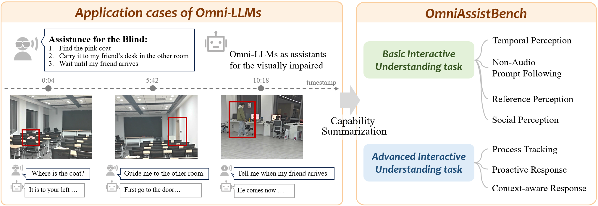

Deficiency in Gesture Instruction Following
Models struggle significantly with gesture-based commands. This reveals a critical weakness in interpreting visual instructions, as models usually fail to distinguish intentional symbolic gestures from other incidental motion information in the dynamic scene.
Introduction
Recent advances in Omni-LLMs are paving the way for real-time video chat applications, such as visual assistance for visually impaired users. However, existing benchmarks fail to systematically evaluate models under these dynamic, interactive settings. To bridge this gap, OmniAssistBench quantifies model's omni-assistant capabilities by summarizing critical abilities and tasks from common real world Omni-MLLM application scenarios.

OmniAssistBench summarizes critical abilities and tasks from real world Omni-LLM applications
to provide quantified evaluation of Omni-LLMs as assistants.